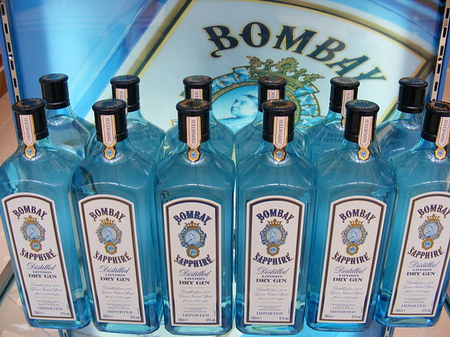
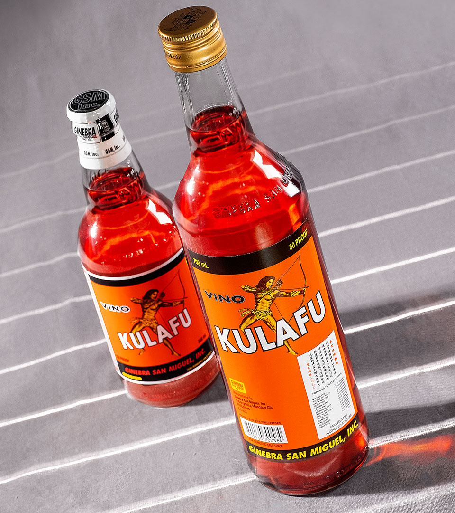
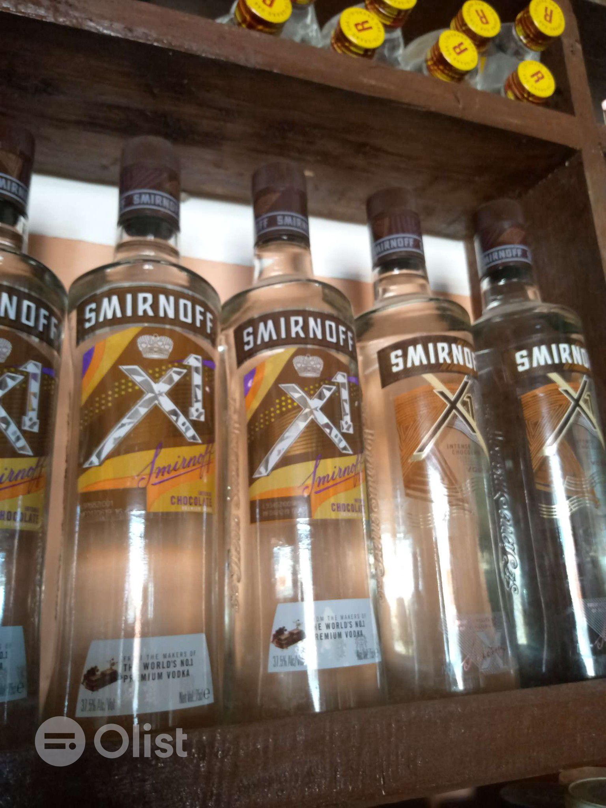

HELLO BLOG ?
Hii! I am Erl Cay 16 years of age and i am currently studying at the most respected school here in Cebu city named
University of Cebu
. I am really satisfied in this school because they teach me a lot and a very good manner. As of my course, I choose this one because for me this is quite awesome and you can manipulate everything
and create something unusual.That is why i am trying my best to finish my studies. In addition, I like coding and web designing because i was influenced by the social media people sharing about their jobs as developers.
Furtheremore, I want to show the world how good to be a game developer or web designer.
RECENTLY ADDED
- 
- 
- 
Hobbies & Likes
Why i do like reading books?
Reading helps to stimulate your mind and divert your focus from issues and problems that are responsible for your stress. A Book has the power to take you to other realms
and fill your mind with positivity.
Foods & Drinks
Why i prefer to eat veges?
It helps us in various spheres of life. Healthy food does not only impact our physical health but mental health too. When we intake healthy fruits and vegetables that are full of nutrients, we reduce the chances
of diseases. For instance, green vegetables help us to maintain strength and vigor.